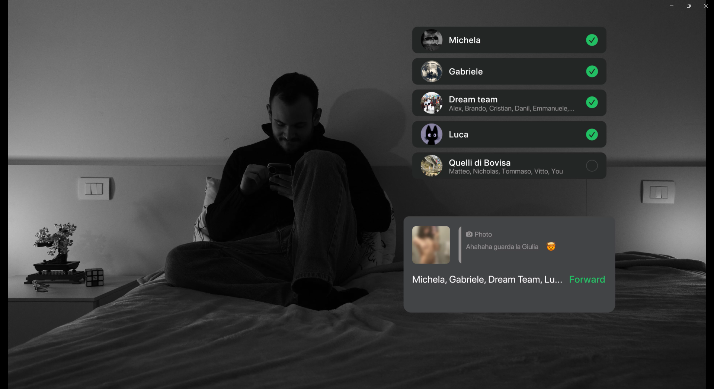
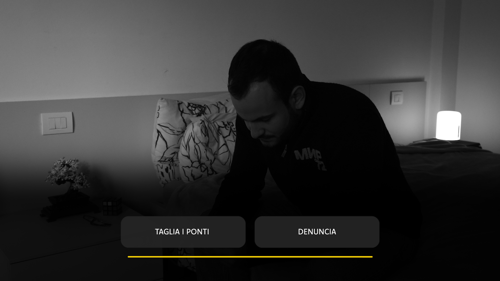
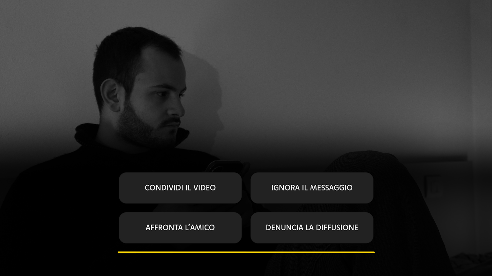
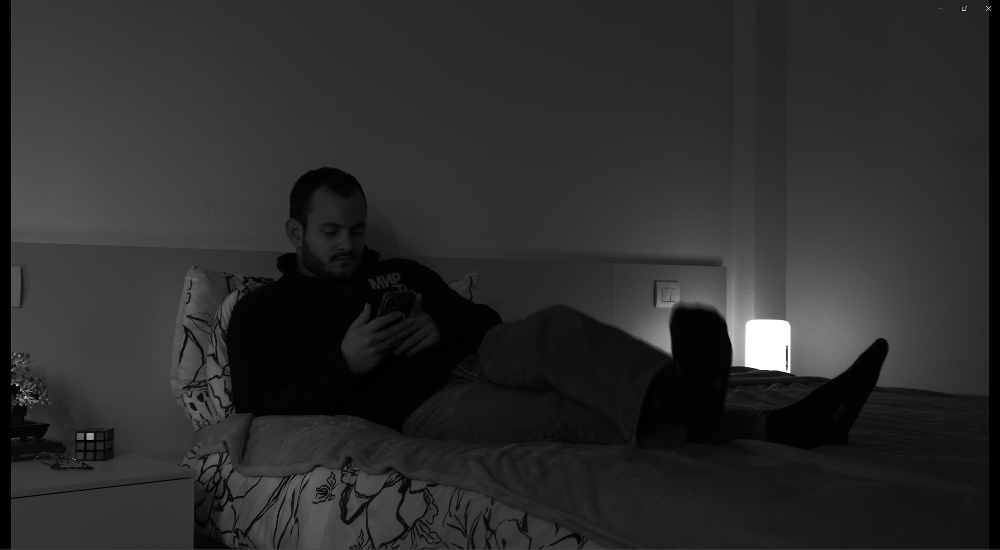
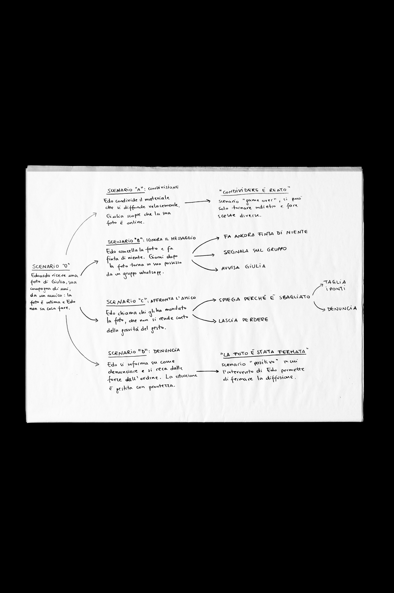
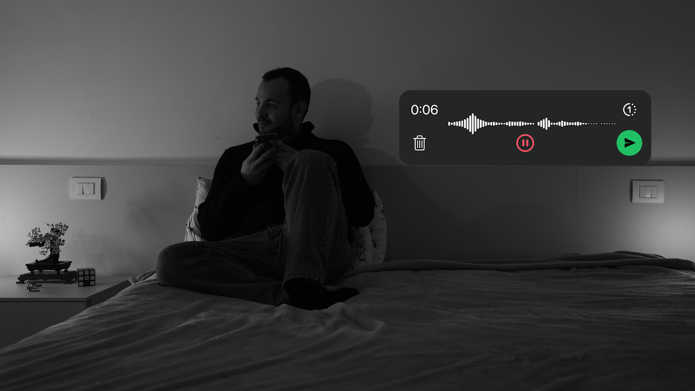
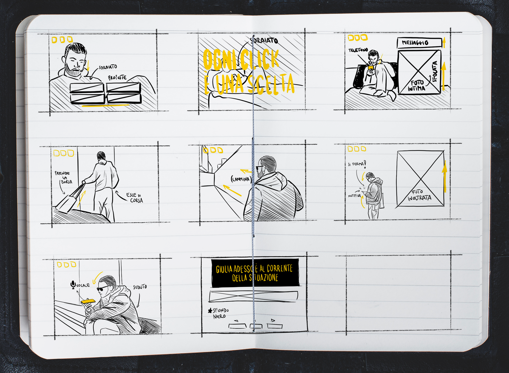
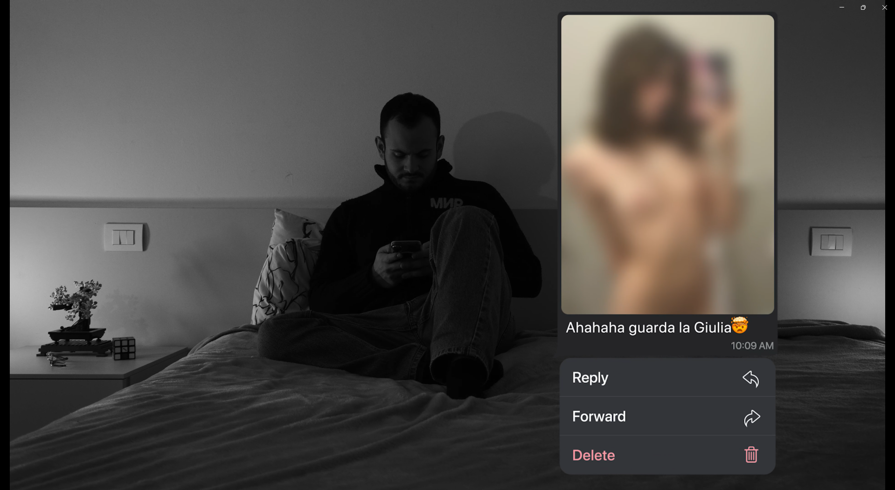
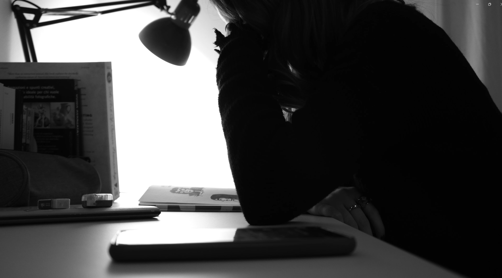
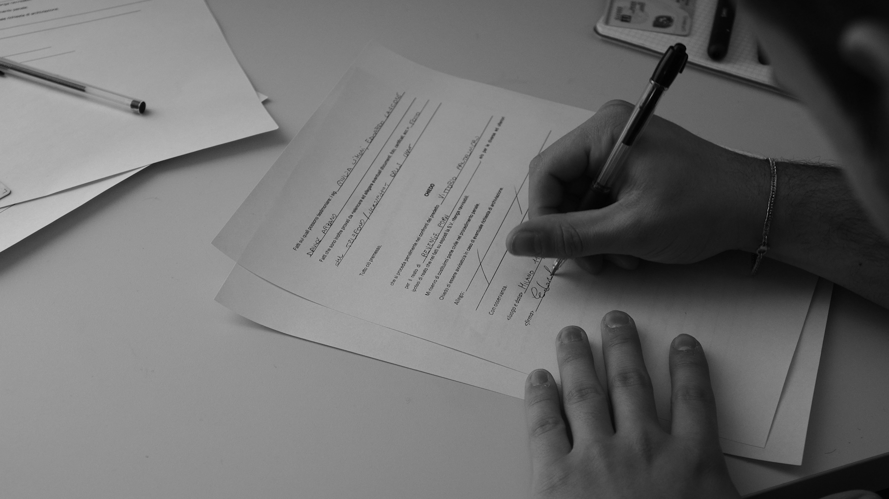

Ogni click è una scelta
CONCEPT
This audiovisual artifact is the last part of a wider awareness campaign project I developed as my team thesis project during my bachelor at Politecnico di Milano, the main objective of which was to highlight the consequences of revenge porn, while challenging the often superficial way this form of abuse is perceived within.
This video uses the gamification theory to explore the impact of personal choices and their consequences, combining coding, animation and audiovisual storytelling through the story of Edoardo, a student who receives an intimate image of another uni student, Giulia, placing him and the viewer at a moral crossroads.
Each choice that the viewer, as Edoardo, takes, leads to a different outcome, structured through a branching narrative that reflects real dilemmas. I led the writing and pre-production phases, overseeing the narrative development and the technical setup of the project.
As the complete view of all the alternative branches would require the download of the complete code package, here is provided an example of one of the main storylines:
“What if the observer became an active part of the dynamic?”









